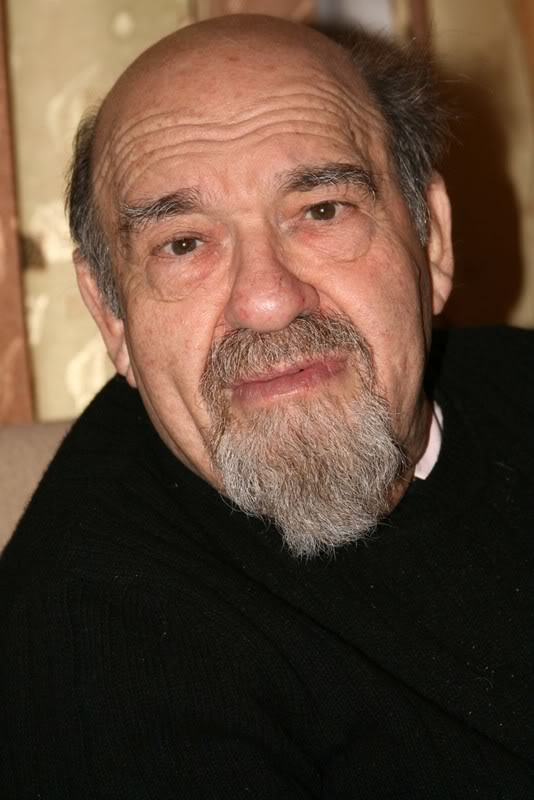

 23-24 марта 2019 года в городе Дублин (SF Bay Area) пройдёт Второй фестиваль интеллектуальных игр, посвящённый памяти нашего друга, выдающегося человека, филолога, поэта и знатока Виталия Абрамовича Колмановского. Фестиваль приурочен к 86 годовщине со дня рождения Виталия Абрамовича.
В рамках фестиваля состоятся XXIV Открытый чемпионат США по "Что? Где? Когда?", чемпионаты США по "Брейн-рингу" и "Своей игре". Победитель турнира по "Своей игре" получит памятный приз имени Виталия Абрамовича Колмановского.
Пакет ЧСША-2019 будет состоять из 72 вопросов — шесть туров по 12 вопросов в каждом. Редакторы: Андрей Абрамов (1 тур), Дмитрий Борок (1 тур), Александр Рождествин (1 тур), Максим Мерзляков (3 тура).
Состав АЖ чемпионата: Тимур Зильберштейн, Олег Леденёв, Ольга Ярославцева.
Координатор АЖ: Алексей Самсонов.
Информация о гостинице:
Все мероприятия фестиваля пройдут в гостинице Holiday Inn Dublin-Pleasanton (альтернативный веб-сайт) — той же самой, где проходили фестивали в 2013 и 2015 годах.
Адрес гостиницы: 6680 Regional Street, Dublin, California 94568
Информация о транспорте:
Расстояния от аэропортов до гостиницы (на машине):
SFO: 33.2 mi, 40 mins
SJC: 29.9 mi, 38 mins
OAK: 18.5 mi, 22 mins
Общественный транспорт:
на расстоянии около мили от гостиницы находится станция метро (BART): West Dublin/Pleasanton. Между станцией и гостиницей ходит бесплатный шатл (для заказа следует связаться с гостиницей по телефону +1-925-8287750).
Поездка между SFO и гостиницей на метро займёт примерно полтора часа: AirTrain или пешком и BART.
Поездка между OAK и гостиницей на метро займёт примерно 40 минут: монорельс и BART.
Кроме того, из/до аэропортов можно добраться на шатлах: SFO, SJC, OAK.